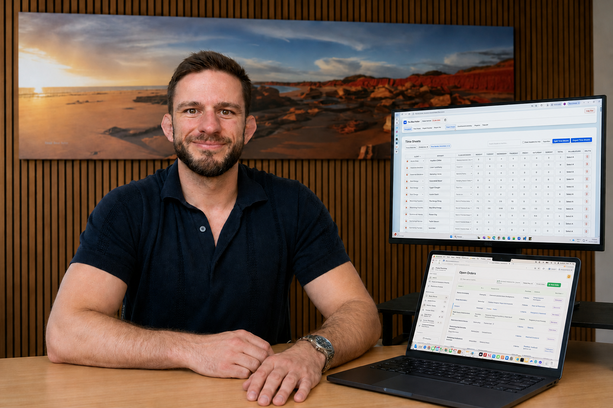

The same information is handled more than once
Paper becomes a spreadsheet
Entering data into another program
Manual cross-checking
I help small business owners save time, money and stress. Using affordable tools, connected software and custom-built solutions, I create a setup that fits the way your business works.

Paper becomes a spreadsheet
Entering data into another program
Manual cross-checking
You feel like you can't take on more clients
You think you need more staff
Weekly processes are rushed
You wish your software did something
You have workarounds to get the job done
You want a better process without the stress
Software tools designed around your business’s specific requirements—not a generic system you have to adapt to.
Connect the systems you already use so information flows seamlessly from one place to the next.
I take the time to understand what your team does today, then build practical tools that save time and reduce the cost of hiring additional staff.
You explain the process that is wasting time or causing problems. I tell you plainly whether I am likely to help.
You show me what you’re doing.
I implement existing tools to speed up what you’re doing, or build for your specific requirements.
You pay the agreed build fee if you choose to put the system into use. I teach you or your staff how to operate it.